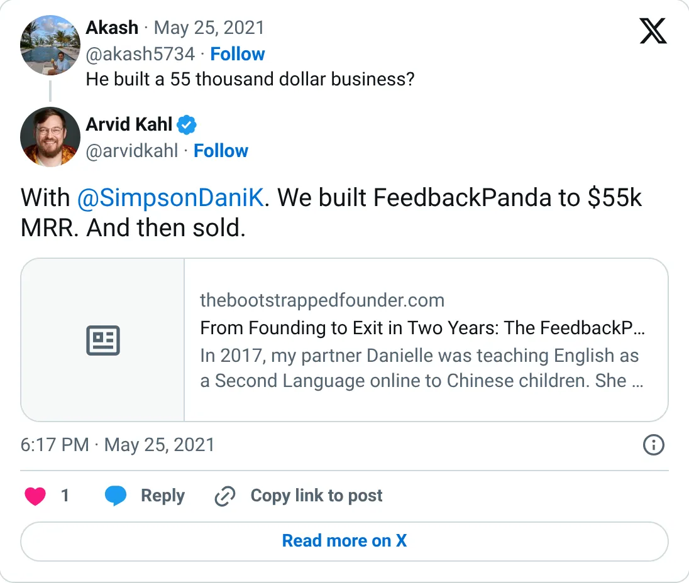
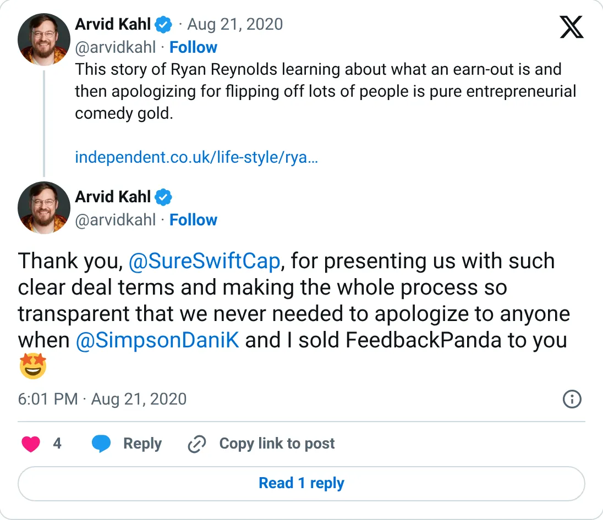

Not a pick
FeedbackPanda
A real-looking company with a headline you should not plan against.
$55K MRR at exit (2019)
Should you build this
The company may be real. The figure on the card is a peak, a stale year, a cash month, or an average. FeedbackPanda is Arvid Kahl's canonical indie exit: built to about $55K MRR and sold, with the figure dated approximately to June 2019. A 2020 post thanks the buyer for transparent terms. Nothing about that is a 2026 flex. It is also not 2026 revenue. Leaving a seven-year-old exit MRR in the ranking inflates the “combined monthly revenue” of this list.
Cited from the captured posts, shown below: the earliest captured post (May 25, 2021) is the source for “Built to $55K MRR, then sold (approx. 2019)”; the latest milestone (Aug 21, 2020) is the source for “Thanks SureSwift Capital for transparent deal terms”.
Posts this is based on

Built to $55K MRR, then sold (approx. 2019)
Open on X

Thanks SureSwift Capital for transparent deal terms
Open on X
What the product is
SaaS that helped online English teachers write student feedback faster with templates. Sold to SureSwift Capital in 2019.
⚠ Exited (2019). Older figure.